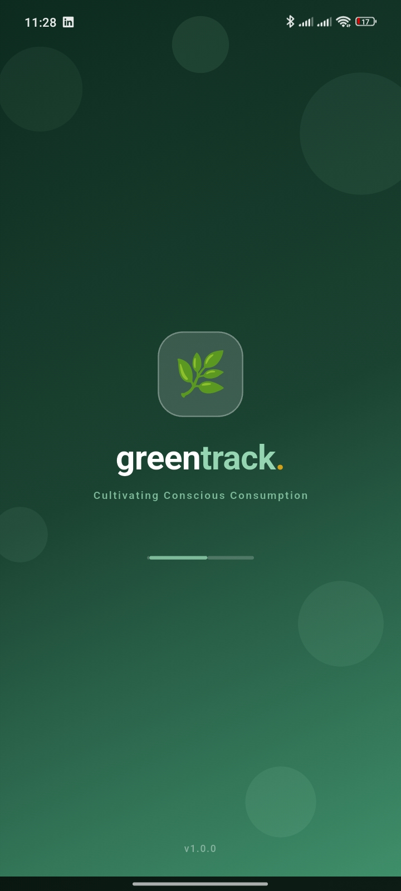

Free for growers. Free for anyone scanning a tag. No account needed to verify a batch.
Available for iOS and Android. Growers sign up free; shoppers, chefs, and diners can scan without an account at all.
Growers pin a plot and start logging. Everyone else just opens the scanner and points it at a batch tag.
Growth stage, harvest date, treatment history — the same record, updated live, wherever the batch travels.
GreenTrack acts as a transparent window into your food. Scan the QR code on a shelf, a crate, or a menu, and your screen fills with the farm of origin, the harvest timestamp, real-time weather history from that plot, organic verification, and a precise nutritional breakdown — no account, no waiting.



Same app either way — the interface adapts depending on whether you're growing or verifying.
The same research that shaped GreenTrack, free to download — the market gap it closes, the crop-by-crop nutrition matrix behind every scan, and the four stories that shaped its design.